## Load libraries
library(sf)
library(dplyr)
library(units)
library(arcgisbinding)
## Initialize R-ArcGIS Binding
arc.check_product()
## Create a tibble with the correct names and abbreviations
rec_abbrev_tbl <- c("Desert", "DREC",
"Hansen", "HAREC",
"Hopland", "HREC",
"Intermountain", "IREC",
"Kearney", "KARE",
"Lindcove", "LREC",
"Sierra Foothill", "SFREC",
"South Coast", "SCREC",
"Westside", "WSREC") |>
matrix(ncol = 2, byrow = TRUE) |>
as_tibble() |>
setNames(c("name", "abbrev"))
## Get the feature layer for the REC boundaries
recs_bnd_url <- "https://geodata.ucanr.edu/arcgis/rest/services/REC_Data/FeatureServer/0"
## Import and fix errors in the attribute table
recs_bnd_sf <- recs_bnd_url |>
arc.open() |>
arc.select() |>
arc.data2sf() |>
st_zm() |>
st_transform(3857) |>
select(name, brochure_l) |>
group_by(name) |>
summarise(name = first(name),
brochure = first(brochure_l)) |>
mutate(objectid = row_number()) |>
mutate(acres = st_area(geom) |>
set_units(acres) |>
round(1) |>
as.numeric()) |>
mutate(name = if_else(name == "HREC",
"Hopland", name)) |>
left_join(rec_abbrev_tbl, by = "name") |>
relocate(objectid, name, abbrev, acres, brochure, geom)
## Export polygons
recs_bnd_sf |>
st_write(dsn = file.path(data_dir, "recs_bnd_3857_v3.geojson"),
delete_dsn = TRUE)
## Export centroids
recs_bnd_sf |>
st_centroid() |>
st_write(dsn = file.path(data_dir, "recs_ctr_3857_v3.geojson"),
delete_dsn = TRUE)Building Decision Support Tools with Shiny
Part 1: Intro to Shiny
Building Decision Support
Tools with Shiny
Part 1: Intro to Shiny
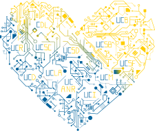
About Me: Some of My R Packages
degday
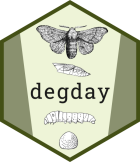
Compute degree days in R
https://ucanr-igis.github.io/degday/
uasimg
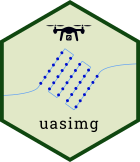
Data management utilities for drone mapping
https://ucanr-igis.github.io/uasimg/
caladaptR
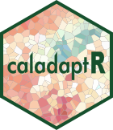
Import climate data from Cal-Adapt using the API
https://ucanr-igis.github.io/caladaptr/
About Me: Some of My Shiny Apps
Precision Irrigation Calculator
https://ucanr-igis.shinyapps.io/irrigation-calc/
Tree Chill Calculator for Cherry
https://ucanr-igis.shinyapps.io/cherrychill/
Navel Orangeworm IPM Economics Calculator
https://ucanr-igis.shinyapps.io/now_ipm_econ/
Pistachio Nut Growth Calculator
https://ucanr-igis.shinyapps.io/pist_gdd/
Chill Portions Under Climate Change Calculator
https://ucanr-igis.shinyapps.io/chill/
Stock Pond Volume Calculator
https://ucanr-igis.shinyapps.io/PondCalc/
About You - Institution
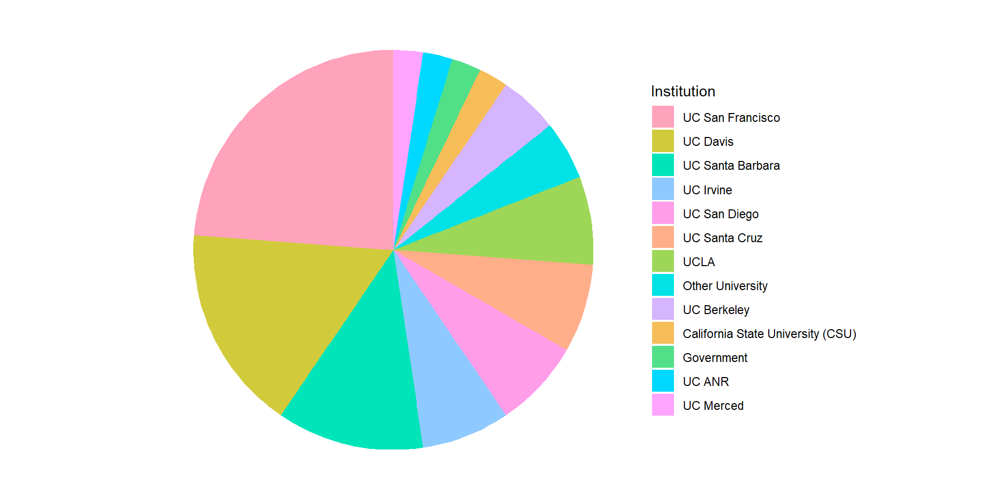About You - Position
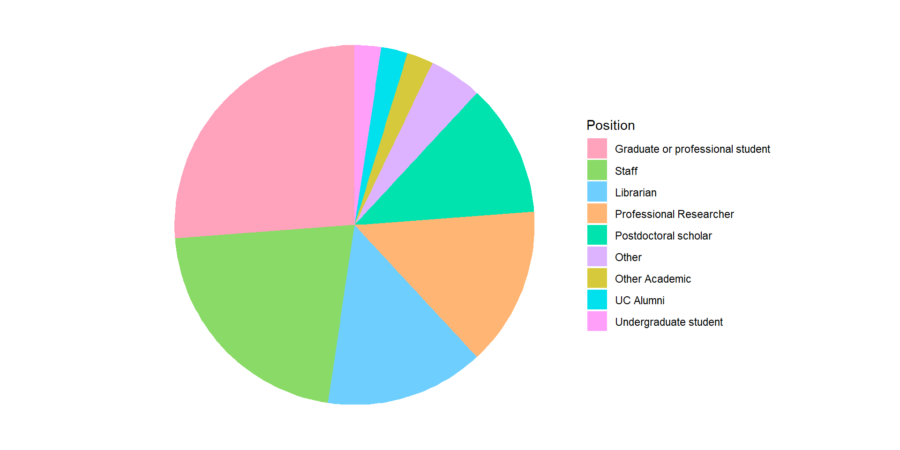About You - R Experience

What is Shiny?
A delivery vehicle for a R script.
A package that allows you to create HTML pages
with R components.
Architecture of a Shiny App
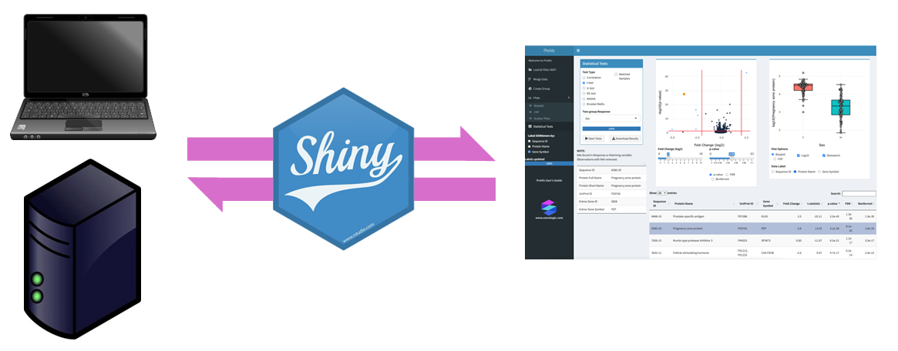Why is Shiny So Popular?
Solves a real pain point for data scientists.
Lowers the bar for creating web apps (dramatically!)
Takes care of all the browser ↔︎ server communication.
Works with both R and Python.
Extremely customizable.
“One-click” publishing.
Workshop Goals
Understand how Shiny works.
Understand the principles of reactivity.
Be able to create a simple Shiny app from scratch.
Be able to effectively utilize documentation and GenAI tools.
Take a decision support model and turn it into a Shiny app.
Let’s make a Shiny app!
Posit Cloud:
RStudio Desktop:
usethis::use_course("https://bit.ly/shiny-dsts-s26")
After opening, run: install_packages.R
Old Faithful:
What We Learned
A Shiny app is just R code.
It’s usually a single file called app.R
It’s usually saved a folder with other stuff needed (e.g., data).
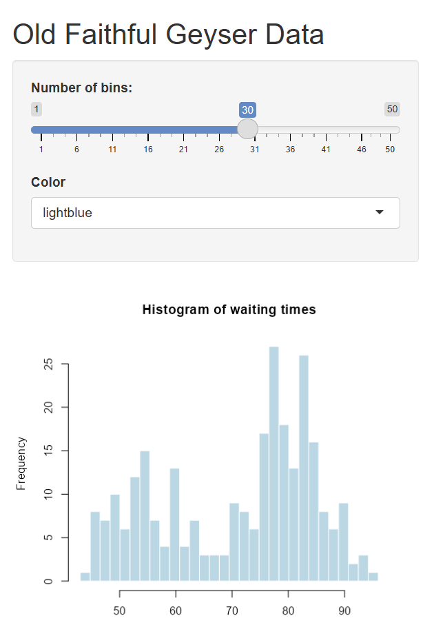
But app.R is not a typical R script…
Traditional R Script
Programming for Web Apps
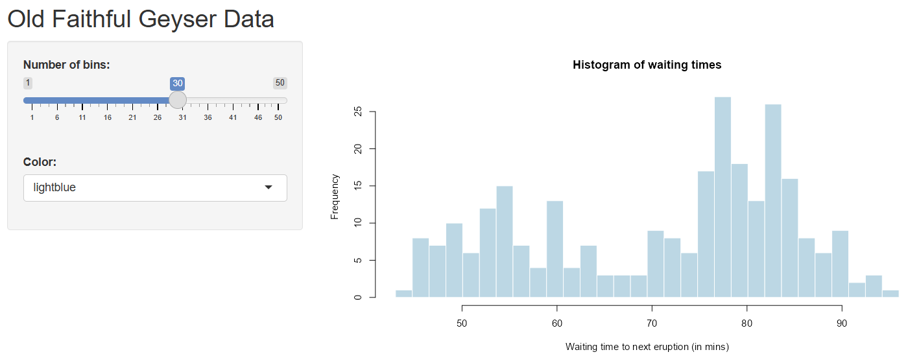
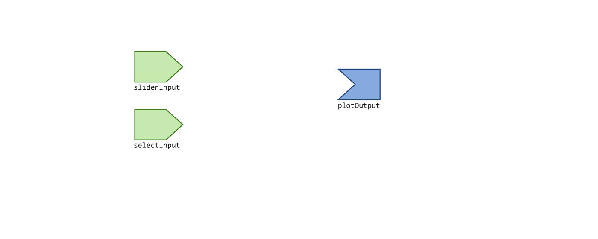

Shiny Server
Anatomy of app.R
# Preamble - load library, import data, etc.
library(shiny)
# Define UI elements, layout
ui <- fluidPage(
titlePanel("Old Faithful Geyser Data"),
sidebarLayout(
sidebarPanel(
sliderInput("bins", "Number of bins:", min = 1, max = 50, value = 30)),
mainPanel(
plotOutput("distPlot")
)
)
)
# Define server logic
server <- function(input, output) {
output$distPlot <- renderPlot({
x <- faithful[, 2]
bins <- seq(min(x), max(x), length.out = input$bins + 1)
hist(x, breaks = bins, col = 'darkgray', border = 'white',
xlab = 'Waiting time to next eruption (in mins)')
})
}
# Run the app
shinyApp(ui = ui, server = server)Your New Best Friend: HTML & CSS
When programming in Shiny, you have a powerful ally: HTML & CSS
shiny & htmltools have dozens of functions that produce HTML code.
Example:
generates:
<p>For more info, go to our <a href="https://igis.ucanr.edu/">web page</a>.</p>
which renders as:
For more info, go to our web page .
More HTML Functions
To see more HTML functions, run names(shiny::tags)
app01.R
Penguin Data Explorer 1
species island bill_len bill_dep flipper_len body_mass sex year
1 Adelie Torgersen 39.1 18.7 181 3750 male 2007
2 Adelie Torgersen 39.5 17.4 186 3800 female 2007
3 Adelie Torgersen 40.3 18.0 195 3250 female 2007
4 Adelie Torgersen NA NA NA NA <NA> 2007
5 Adelie Torgersen 36.7 19.3 193 3450 female 2007
6 Adelie Torgersen 39.3 20.6 190 3650 male 2007
Overview
Start a new Shiny app from scratch
One input: select box
Two outputs: plot and table

app01.R Reactivity
Handy Functions for Static HTML
UI Elements
p()
h1()
h2()
h3()
strong()
em()
img()
Layout:
br()
hr()
div()
More HTML Helpers
See also htmltools package
***Output() ↔︎ render***() pairs
| UI function | Render function |
|---|---|
| textOutput() | renderText() |
| verbatimTextOutput() | renderPrint() |
| plotOutput() | renderPlot() |
| tableOutput() | renderTable() |
| imageOutput() | renderImage() |
| uiOutput(), htmlOutput() | renderUI() |
render***() Functions
Each render*** function expects a specific object
The only thing that matters is the last line!
Example: renderText()
output$out_num_hurricanes <- renderText({
## renderText expects a character object
## You can have a 100 lines of code if needed
category3_hurricanes <- storms |>
filter(category == 3) |>
distinct(name, year)
## As long as the last one returns a character object!
nrow(category3_hurricanes) |> as.character()
})Do I really need to learn all this?
Can’t GenAI do this for me?
GenAI Helpers
Gemini, Claude, ChatGPT, etc.
- ask questions, generate entire app.R scripts
- Creates (and runs!) a complete Shiny app based on your prompt
- You can also paste in your own app.R
- Continue to make requests, ask questions, etc. It will keep updating and running the app.
Integrated Code Completion Tools in IDEs
- ‘ghost text’, sidebar interfaces, code suggestions, etc.
- available in RStudio, Positron, VSCode
GenAI Best Practices
Only use GenAI tools approved by your organization.
Smaller questions are generally better.
Understand the fundamentals so you can evaluate output.
Ask the same question to multiple LLMs.
Treat it like taking a class - get curious, ask follow-up questions, read documentation, etc.
app02.R Preview
Penguin Data Explorer with Randomizer
New select input: Island
New slide: percent sample
Outputs: plot and table (same as app1.R)
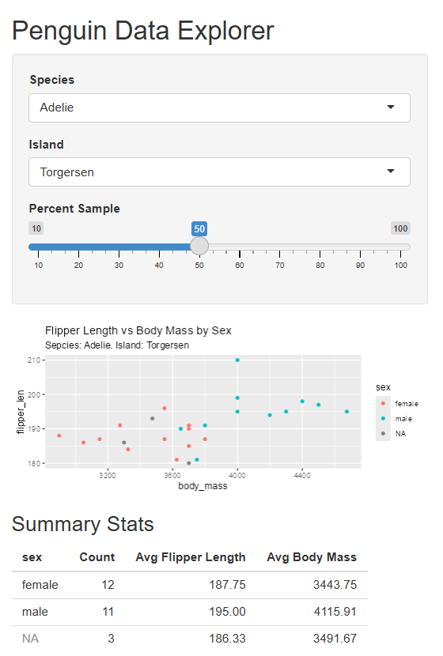
app02.R Reactivity diagram
app02.R Reactivity diagram
New Shiny object: reactive()
‘reactive’ objects are:
- like a standard R object, but dynamic and knows when to update itself
- created with
reactive({...})in the server section
- defined by a piece of code that gets re-run when needed
- often used in Shiny apps to create intermediate objects to eliminate duplication
Using Reactive Objects
Even though reactive objects are used like standard R objects, they are called like functions:
- Reactives are always used somewhere else in your app
- Reactives can be chained together to create a data processing pipeline
- Reactives can be ‘bound’ to specific events so they only update when something specific changes
app02.R Reactives - Summary
Use a reactive whenever you need an intermediate object.
Reactives can store any R object (e.g., data frame, list, etc.).
Reactives are often used to store data in decision support tools that wrangle data.
You can use reactive in render****() functions, or other reactives (just remember to include the ()!).
app03.R Challenge
Replace the ‘XX’ with the actual number of observations.
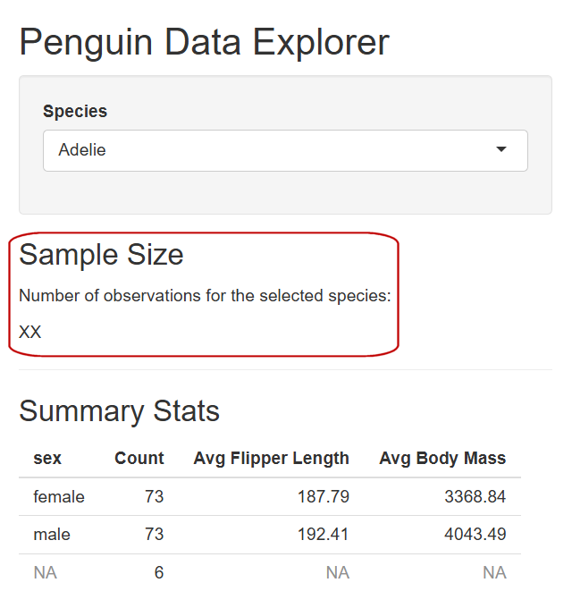
More Advanced Techniques
control reactivity with
isolate()andbindEvent()run arbitrary code in a reactive context with
observe()reactiveVal()- like areactive()that you can update in multiple placestrapping errors
take your UI to the next level:
- interactive HTML widgets
- theming and styling
Publishing Shiny Apps
For other people to use your Shiny app, it must be published to a server that is running Shiny Server.
To get started, look for the ‘Publish’ button in RStudio (ShinyApps.io)
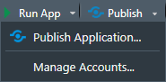
Publishing from Positron
Publishing Shiny Apps from Positron is not hard but requires a couple of setup steps:
- install the ‘Posit Publisher Extension’
- create a manifest file
Hosting Options
| ShinyApps.io | free tier; going away in 2026 |
| Posit Connect Cloud* | free tier; designed to be deployed from GitHub |
| Commercial services (PaaS) | Posit, Ploomber |
| Pre-Configured Servers | DigitalOcean, AWS, Kamatera |
| Docker hosting | self-hosted, Fly.io, DigitalOcean, AWS, Azure, etc. |
| Shiny Server open source | self-hosted |
*see also Posit webinar: Publishing R & Python Work: Evaluating Connect and Connect Cloud, Feb 19, 2026
Publish a Shiny Apps on a Standard Web Server!!
The shinylive package can convert your Shiny app to a version of R that runs in the browser so doesn’t require Shiny Server. This allows you to host it on a standard web server!